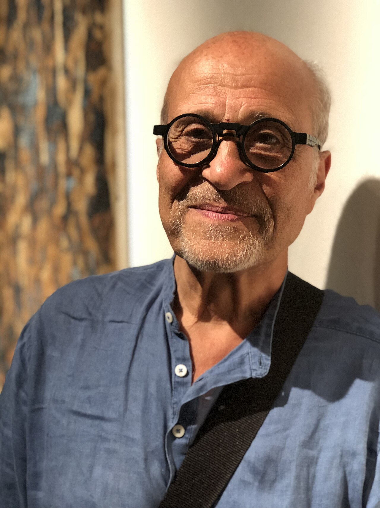
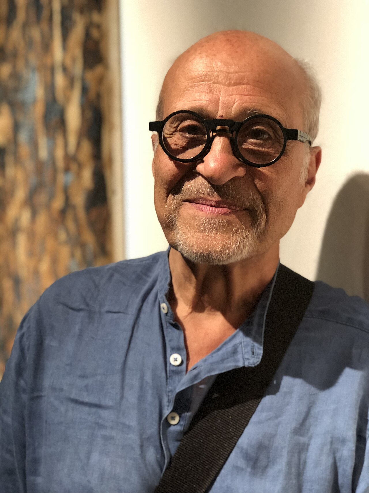
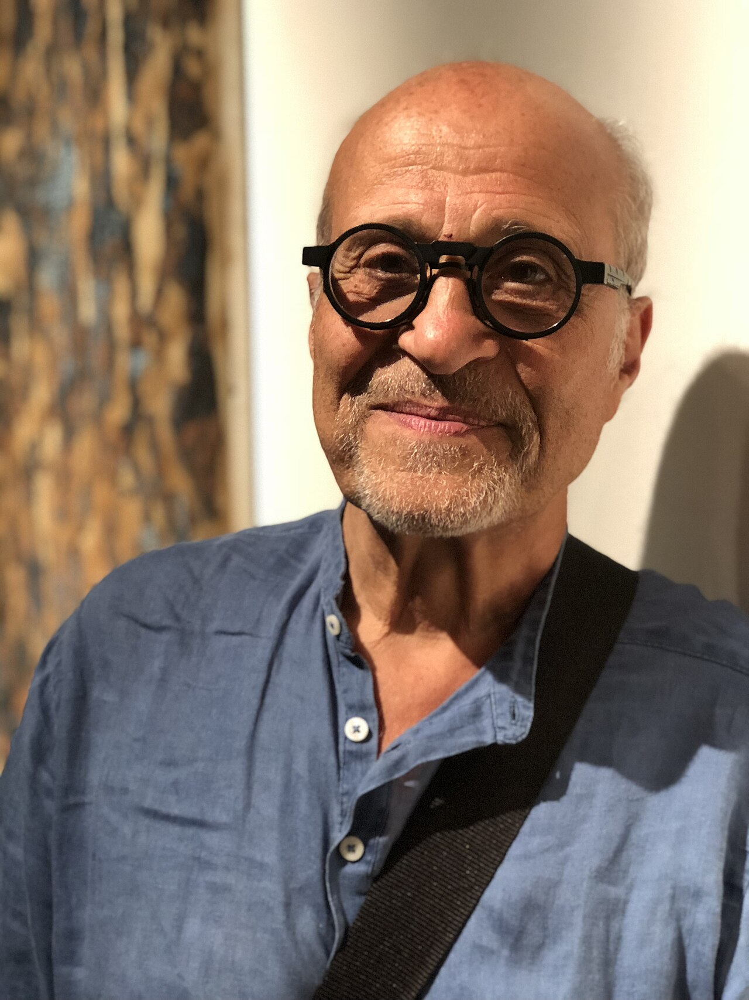
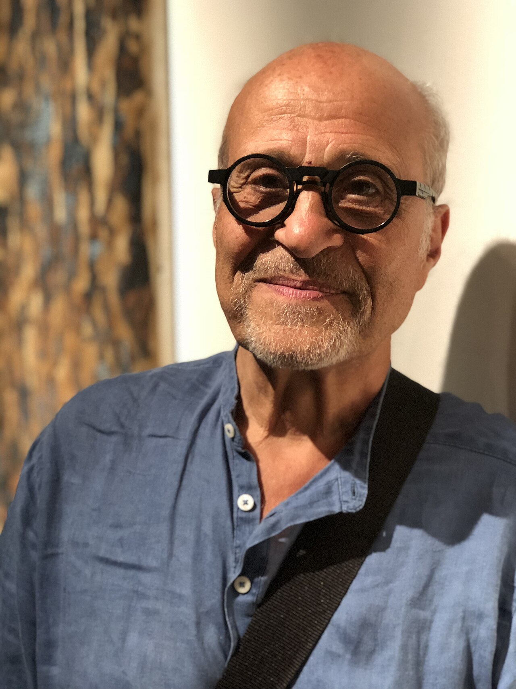

CityLoop Quest Gand


Le premier matériau à regarder à Gand est la pierre de Tournai. Sa teinte gris bleuté caractérise l’église Saint-Nicolas et plusieurs éléments gothiques du centre. Transportée par l’Escaut, elle permettait des constructions robustes aux volumes puissants. Le gothique scaldien se distingue notamment par des tours centrales massives et une transition entre formes romanes et gothiques. À côté, la brique domine les maisons, couvents et bâtiments industriels, créant une ville où la couleur change fortement avec la pluie.

Les quais du Graslei et du Korenlei forment un véritable manuel de façades marchandes. Pignons à gradins, baies verticales, décors sculptés et inscriptions rappellent les métiers du grain, des bateliers et des péagers. Plusieurs bâtiments furent restaurés ou partiellement reconstruits pour l’Exposition universelle de 1913, ce qui invite à regarder le patrimoine avec nuance. Une façade peut être médiévale dans son origine, baroque dans certains détails et profondément remaniée au XXe siècle.

Le pouvoir civil s’exprime par le Beffroi et l’Hôtel de Ville. Le premier associe tour de guet, cloches et Halle aux draps ; le second juxtapose de manière spectaculaire une aile gothique flamboyante et une aile Renaissance. Cette collision de styles n’est pas un défaut : elle révèle un chantier interrompu puis repris selon de nouveaux goûts. Colonnes classiques, niches, pinacles et fenêtres à remplage se côtoient à quelques mètres.
Aux XVIIIe et XIXe siècles, hôtels particuliers, théâtres et banques introduisent néoclassicisme, éclectisme et Art nouveau. L’industrialisation produit une autre architecture : filatures à grandes fenêtres, entrepôts, cités ouvrières et infrastructures ferroviaires. De nombreux sites sont aujourd’hui reconvertis. L’ancienne filature du Musée de l’Industrie, les bâtiments de la Bijloke et les entrepôts portuaires montrent comment des volumes fonctionnels peuvent devenir espaces culturels sans perdre toute trace de leur passé.
L’architecture contemporaine ne cherche pas toujours la discrétion. La Halle municipale, achevée en 2012 entre le Beffroi et Saint-Nicolas, possède une grande toiture en bois et verre qui a suscité un débat passionné. Elle illustre une question permanente : comment construire dans un centre historique sans fabriquer un faux monument ancien ? En observant Gand, prêtez attention aux raccords, aux cicatrices de murs et aux matériaux neufs ; la ville est particulièrement intéressante là où les époques ne se fondent pas complètement.

L’industrialisation a ajouté une architecture longtemps jugée utilitaire. Les filatures associaient vastes plateaux, charpentes, verrières, murs de brique et hautes cheminées. Leur implantation près de l’eau facilitait transport et énergie. Plusieurs complexes ont été transformés en musées, logements, bureaux ou lieux culturels. L’Industriemuseum conserve cette échelle de fabrique ; les anciens docks montrent comment entrepôts et grues peuvent devenir les repères d’un quartier habité. Une reconversion réussie ne gomme pas toutes les cicatrices : elle laisse lire les portes agrandies, les structures métalliques et les rythmes répétitifs des fenêtres.
Le XXe siècle a produit des gestes tout aussi marquants. La Boekentoren d’Henry van de Velde, commencée dans les années 1930, traduit le savoir universitaire en silhouette verticale. Au centre, le Stadshal achevé en 2012 assume une forme contemporaine entre les monuments historiques : grande toiture de bois, verre et acier, portée au-dessus d’un espace public couvert. L’édifice fut contesté, puis progressivement adopté comme scène urbaine. Il rappelle une leçon très gantoise : le patrimoine ne se protège pas seulement en imitant le passé, mais en acceptant que chaque époque laisse une architecture identifiable et discutable.
Même les restaurations racontent une époque. Avant l’Exposition universelle de 1913, la ville voulut présenter un centre médiéval cohérent et embellit plusieurs façades avec une liberté que les conservateurs actuels jugeraient excessive. Certaines maisons furent déplacées, complétées ou reconstruites d’après une image idéale du passé. Cela n’enlève pas leur valeur, mais invite à distinguer pierre ancienne, intervention historiciste et création récente. Gand se lit mieux lorsque l’on accepte ces montages au lieu de chercher un Moyen Âge parfaitement intact.